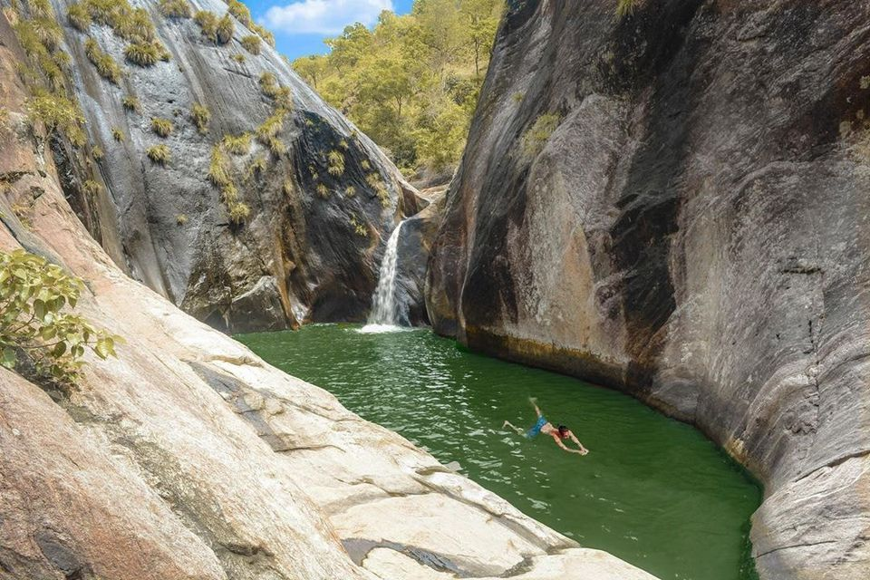
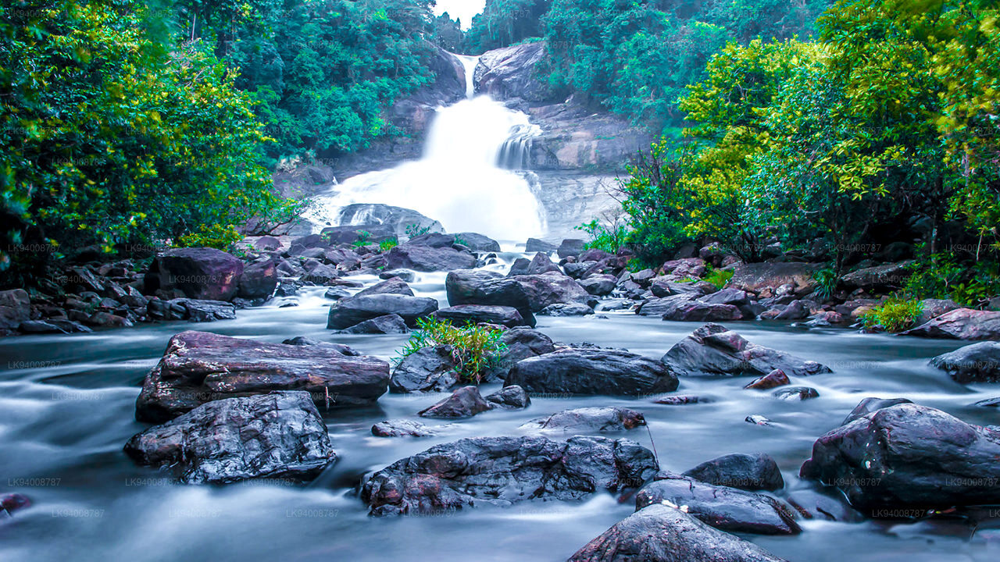
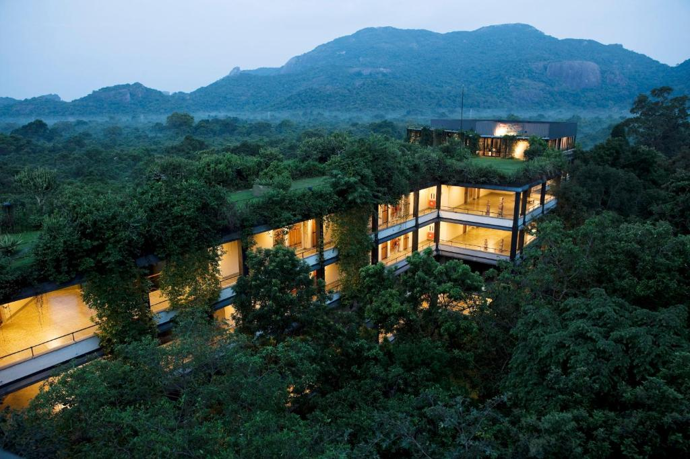

Pahanthudawa
Pahanthudawa Waterfall is another unique creation in Sri Lanka. The reason is due its natural location built in.The water that falls into this fall is in the shape of a wick of a lamp. It is quite difficult to view the falls as one must cross walk the the stream and climb the steep valley upstream

